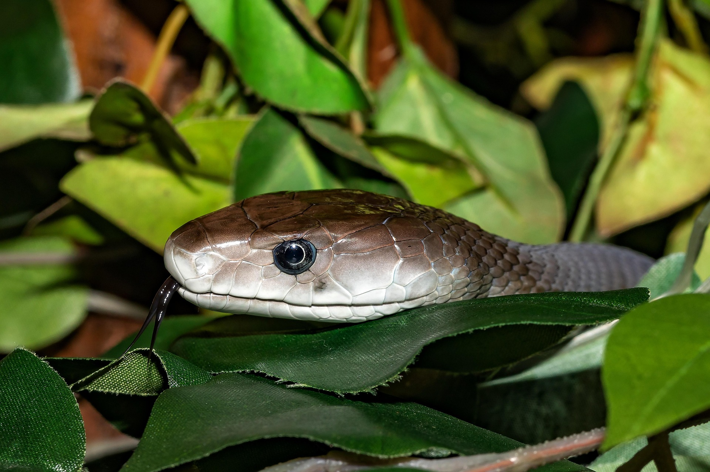
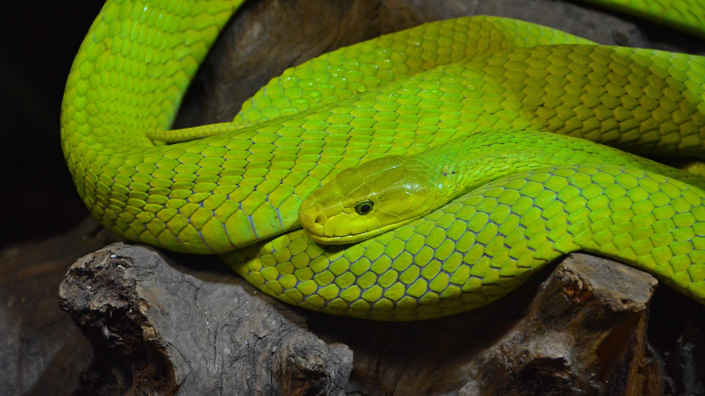
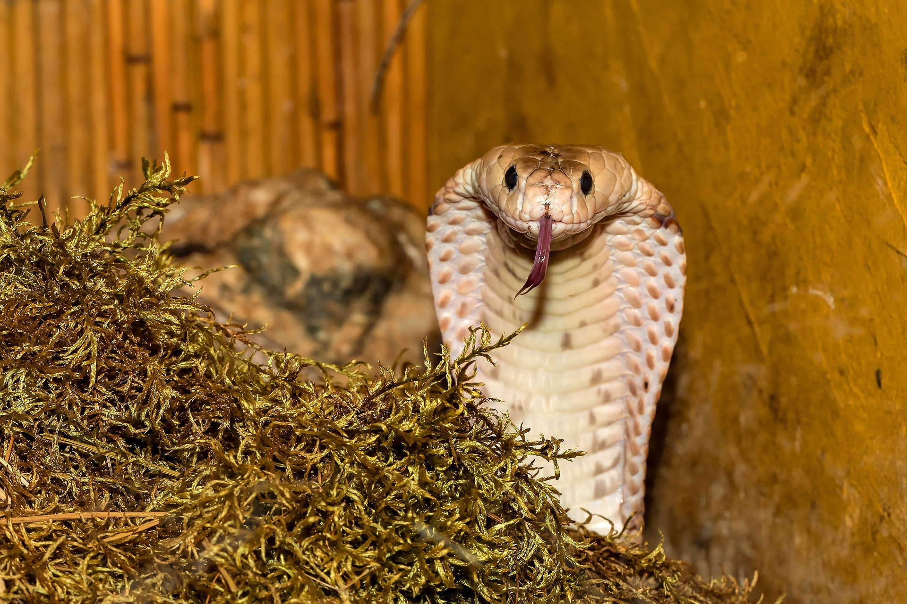

The black mamba is one of the fastest and most feared snakes in Africa. It is highly venomous and can move at impressive speeds.
Read More
Green mambas are arboreal snakes found in forests. They are highly venomous but usually shy.
Read More
Cobras are famous for their hood display. Some species can spit venom accurately toward threats.
Read More